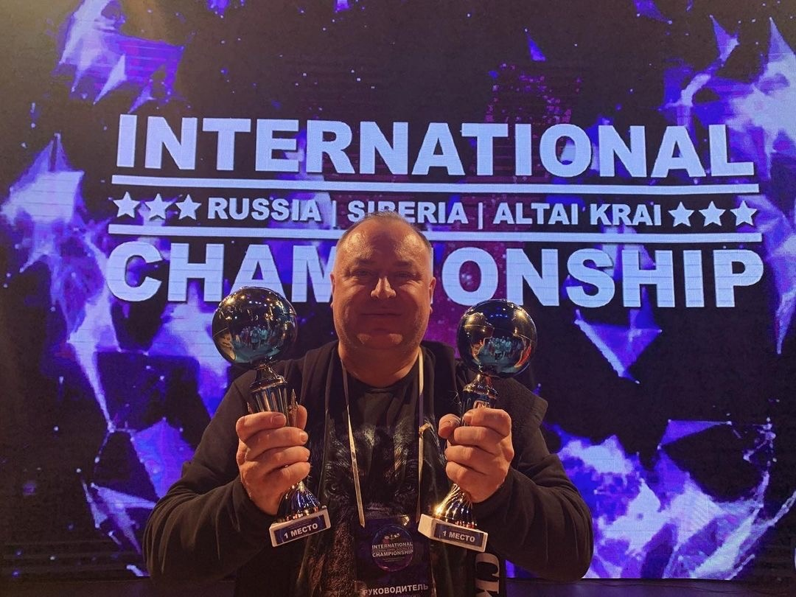

|
1. 12-го мая Dance-группа участвовала в IV МЕЖДУНАРОДНОМ ФЕСТИВАЛЕ ИСКУССТВ "Lilac May". Там ребята завоевали два лаурета III степени,лауреат I степени и спец-приз за классную команду.
2. Младшая группа участвовала в фестивале "Танцующий город",где также завоевала лауреат I степени
3. 15-го апреля коллектив принял участие в международном фестивале искусств "Primerose",где также оставил свой след и забрал с собой 2 лаурета II степени
4.11 марта в городе Бийске прошел II краевой фестиваль современного и эстрадного танца "Cтупени".Коллектив забрал с собой 2 лаурета I степени.
5. 2-го апреля проходил фестиваль "Волшебная свирель",где выиграли 2 диплома 3-го места и 1 диплом 2-го места.
6. В 2016 году коллекттив занял 2-е место на чемпионате России по BrakeDance.


|
Выход на главную страницу
2023 г.
|